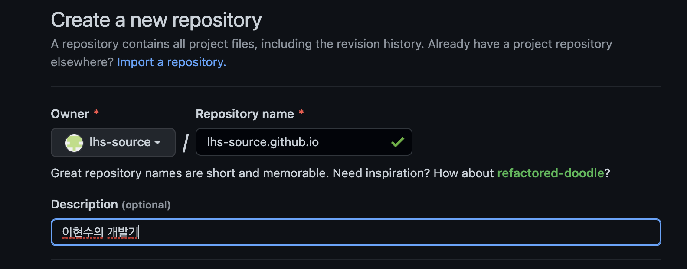

개발 블로그를 작성하기 위해서 github.io 를 사용하기로 했다. velog나 tistory, medium 같은 것들도 있지만, 내가 완전히 커스터마이징 가능한 페이지를 갖고 싶었다. 그렇다고 서버를 돌리거나, AWS를 통해서 구축하는 수고까지는 하지 않으려 했다. 지금 와서 생각해보면 거의 비슷한 공수가 들었다. Notion도 고려했는데, 내 개인 노트로 아주 잘 활용하고 있으나 블로그로 사용하기에는 너무 에디터다. 이렇게 쓰니까 깃헙을 고른 이유는 그냥 해보고싶어서에 가까워 보인다.
페이지를 구축할 언어로는 내가 지금 사용하고 있는 Vue 프레임워크를 사용할 것이다. 단순히 정말 지금 내가 익숙한 것이기 때문에 골랐다. 그렇다고 블로그에 대단한 기능을 넣을 것은 아니다. 나중에 게시글 뿐 아니라 포트폴리오의 역할도 해줄 수 있을 것 같아서, 주력 프레임워크를 선택해야겠다고 다짐했다.
참고한 블로그는 위 블로그이다. 내가 하려던 것을 똑같이 이미 구현해서 사용하고 계셨기 때문에 참고하기에 너무 훌륭한 블로그였다. 직접 블로그에 포스팅도 해주셨는데, 중간중간 소스도 염탐했다.
Github.io 페이지 만들기

당연히 Github 계정이 있어야한다. [유저명.github.io](http://유저명.github.io) 라고 프로젝트를 하나 만든다. 이렇게 프로젝트를 만들면 자동으로 Github Pages 를 사용하겠다고 알리는 격이다. 필수는 아니고, 나중에 Github Pages 를 사용하겠다고 따로 설정할 수도 있다.

배포 대상 브랜치를 선택하고, 폴더를 선택하여 저장하면 끝이다. 하지만 이름을 짓기도 귀찮고, 굳이 따로 설정할 필요가 없으니 규칙을 따라서 진행한다.
Github Actions 로 Github Pages 배포

Github Pages 로 사용되는 레포는 대부분 결과물을 관리하는 레포이다. 레포에 푸시가 되면 Github 봇이 감지하여, 자동으로 Github Pages 배포를 실행한다.
나는 vue 앱을 빌드하고 결과물을 배포하는 것까지 한번에 관리를 하고 싶다. 방법은 세 가지가 있다.
- gh-pages 활용
- 수동 빌드
- github actions 등록
내가 선택한 방법은 3번이고, 1번은 시도도 안해봤다. 하지만 gh-pages 를 많이들 사용한다. 간단하게 설명을 하자면,
gh-pages
gh-pages 라는 라이브러리를 가지고, 빌드 결과물을 gh-pages 브랜치 에 publish 하는 것이다. 기본적으로는 package.json 파일의 homepage 속성에 해당하는 url 로 배포를 하게 된다.
수동 빌드
수동 빌드 는 Github Pages 설정 페이지에서 호스팅할 폴더를 고를 수 있다. 기본적으로 root 폴더이며, /docs 폴더를 추가로 지정할 수 있다. 해당 레포 브랜치의 docs 폴더를 호스팅하겠다는 것이다.

// vue.config.js
module.exports = {
outputDir: 'docs',
}
빌드의 결과물을 docs 폴더에 생성되게 하고, 레포에 올려주기면 하면 된다. vue 의 경우 outputDir 속성을 docs 로 변경해주면 간단하게 결과 폴더가 바뀐다. 추가로 .gitignore 에 docs 폴더가 있다면 항목을 제거해서 원격 레포에 푸시해주면 자동으로 봇이 실행되면서 페이지를 배포한다.
Github Actions
Github Actions 는 간단하게 설명하면, CICD 툴이다. 젠킨스나, aws pipeline, circleCI 같은 역할을 한다. Gitlab 에도 비슷한 기능이 있는데, 이쪽은 아직 써보지 못했다. Github Actions 는 프로젝트에 포함된 yaml 파일을 기반으로 명령을 실행한다.
name: Deployment to Github Pages
on:
push:
branches:
- deploy
jobs:
deploy:
runs-on: ubuntu-latest
steps:
- uses: actions/checkout@master
- name: Set up Node.js
uses: actions/setup-node@master
with:
node-version: 16.x
- name: Install dependencies
run: npm install
- name: Build
run: npm run build
env:
NODE_ENV: production
- name: Deploy
uses: peaceiris/actions-gh-pages@v2.5.0
env:
PERSONAL_TOKEN: ${{secrets.GH_TOKEN}}
PUBLISH_BRANCH: master
PUBLISH_DIR: ./dist
SCRIPT_MODE: true
on 은 트리거로 Github 대부분의 훅을 활용할 수 있다. 가장 기본적으로 푸시가 있으며, 라벨, 이슈 관리, 풀 리퀘스트, 스케줄 등이 있다. 자세한 건 Github Docs 에 자세히 작성되었다.
jobs 는 말 그대로 작업이며, 적힌대로 쭉 작업을 진행한다.
위 코드를 간략히 보자면, “deploy 브랜치의 푸시가 감지되면, 코드를 체크아웃한 후에 npm install 로 종속성을 모두 다운로드 받고, npm run build 로 빌드를 한 후, gh-pages 아티팩트를 활용해서 master 브랜치에 dist 폴더에 담긴 결과물을 배포” 이다.

이 때 활용하게 되는 것이 Github Secrets 이다. Actions 실행할 때 필요한 암호키나 레포에 노출되지 말아야 하는 중요한 데이터의 경우 레포 설정에 저장해놓고 사용함으로써 외부로 노출시키지 않아도 된다. 간단하게 이름-값 으로 이루어져 있어서 대충봐도 키를 등록할 수 있을 것이다. 데이터를 사용할 때는 PERSONAL_TOKEN: ${{secrets.GH_TOKEN}} 이런 식으로 사용한다.

master 브랜치에 결과물이 배포되기 때문에 Pages 설정을 알맞게 바꿔준다.

Github Workflow 는 두 번 돌게 된다.
- deploy 브랜치에 배포를 하면 Github Actions 가 실행되어 빌드하고,
master브랜치에 결과물을 푸시한다. - 그럼 Gihub 봇이 알아채고 페이지에 배포를 시작한다.

봇이 돌린 Workflow 에서 배포가 완료된 우리의 페이지도 확인할 수 있다. 아래 Artifacts 는 Jekyll 이 빌드한 결과물이다. 실제로 보면 npm build 결과를 그대로 래핑하는 것과 매한가지다.
블로그 포스트 목록 관리하기
따로 서버를 관리할 것이 아니라면 레포에 글 목록도 관리를 하는 게 맞다고 판단했다. 클라에서 모든 것을 해결하는 것은 어렵지 않다. 데이터를 직접 작성해서 갖고 있으면 된다.
// public/posts/postlist.json
[
{
"url": "d5c653f34310b85f731a497e64970059921fba363647f5cc1e39ead9ea9cf76f",
"fileName": "first-post",
"title": "블로그를 Github.io 로 시작하는 첫 포스트",
"description": "요약을 써줘요",
"createdAt": "2022-06-24",
"updatedAt": "2022-06-25",
"tags": ["tag1"]
},
{
"url": "8689a6f9a9428af5a3570a0236abdb9abf62409077138a3d02a676b3a3f757f4",
"fileName": "second-post",
"title": "두 번째 포스트",
"description": "요약을 써줘요",
"createdAt": "2022-06-24",
"updatedAt": "2022-06-25",
"tags": ["tag1"]
}
]
static 하게 직접 관리할 대상이기 때문에, public 폴더에 두었다. Vue 빌드 시 public 폴더 안의 내용물은 그대로 결과폴더에 복사되기 때문에, 깃헙에서 바로 읽어올 수 있다.
import { VuexModule, Module, Mutation, Action } from "vuex-module-decorators";
import axios from "axios";
export interface Post {
url: string;
fileName: string;
description: string;
title: string;
tags: string[];
data: string;
}
@Module({ namespaced: true, })
class Posts extends VuexModule {
public postList:Post[] = [];
public currentUrl = '';
get currentPost(): Post | undefined {
if(this.currentUrl == null || this.currentUrl == '' || this.postList.length <= 0){
return undefined;
}
else {
return this.postList.find(post => {
return post.url === this.currentUrl;
})
}
}
@Mutation
public setPostList(postList: Post[]) {
this.postList = postList;
}
@Mutation
public setCurrentUrl(currentUrl: string) {
this.currentUrl = currentUrl;
}
@Action
public requestGetPostList() {
axios.get(`/posts/postlist.json`).then(res => {
this.context.commit("setPostList", res.data);
});
}
@Action
public moveCurrentUrl(url: string) {
this.context.commit("setCurrentUrl", url);
}
}
export default Posts;
posts store의 기능은 다음과 같다.
- 포스트 목록을 postlist.json 에서 읽어오기(사이트 접속 시 한 번) 사이트 접속 시 한 번이라고 판단한 근거는 기술 블로그를 찾아다닐 때는 보통 구글링을 통해서 유입된다. 그렇다고 한번 들어온 사람이 그 블로그의 다른 글까지도 샅샅이 뒤져보는 경우는 거의 없다. 원하는 정보를 확인한 후 바로 나가는 것이 태반이다. 또 대부분 최신의 포스팅 보다는 최소 한 두달 전의 게시글을 확인하기 마련이며, 글 목록을 계속해서 갱신할 필요는 없다고 판단했다.
- 포스트 페이지에서 전달받은 포스트 url 을 갖고 해당하는 포스트를 조회한다.(포스트 페이지 진입 시) 이 부분은 갖고 있는 포스팅 목록에서 단순히 조회하는 기능이다. 추후에 글이 엄청 많아져서 조회에 걸리는 데 부하가 걸리면 행복한 고민이니까 나중에 하자.
// App.vue
import { useStore } from 'vuex';
const store = useStore();
store.dispatch("Posts/requestGetPostList");
사이트 최초 접속 시에만 포스트 목록을 가져오게끔 App.vue 의 setup 훅에서 조회하도록 했다.
// DetailView.vue
import { ref, defineProps, onMounted, computed } from 'vue';
import { useRoute } from 'vue-router';
import { useStore } from 'vuex';
const store = useStore();
const route = useRoute();
const paramId = route.params.id;
store.dispatch("Posts/moveCurrentUrl", paramId);
const post = computed(() => {
return store.getters["Posts/currentPost"];
});
DetailView 가 포스트 내용을 보여줄 뷰인데, 포스트 url 을 확인한 후 해당하는 포스트 데이터를 가져오게 했다.

이걸 토대로 글 목록을 보여주니 잘 나온다.
Markdown 적용하기
나는 개발 노트를 2014년부터 사용했는데, 에버노트 - Typora - Joplin - 노션 순서로 넘어왔다. Typora 와 Joplin 은 사용기간이 매우 짧아서 에버노트 사용 후 노션으로 넘어왔다고 봐도 무방하다. 그 이유가 마크다운이었던 만큼, 개발 블로그는 무조건 마크다운이다 라고 생각했다.
npm i showdown
npm i showdown-table
showdown 이라는 라이브러리를 사용할 것이다. 참고한 블로그에서 사용했기 때문이다. 왠지 마크다운 변환 라이브러리가 많을 것 같아서 다 알아봐야하는 데 시간 좀 걸리겠다 했는데, 빠르게 정할 수 있었다. 이 라이브러리는 단순하게 md 데이터를 html 로 마크업해주는 역할이다. 단순 스트링을 인자로 넘겨주면 된다.
showdown-table 은 이름 그대로 table 까지 지원해주는 확장라이브러리이다. 그 말은 즉슨 showdown 라이브러리에서는 기본으로 지워하지 않는다는 뜻이다.
// src/store/posts.ts
@Action
public requestGetMarkdoen(postName: string) {
return axios.get(`/posts/${postName}.md`).then(res => {
const markdownPost = res.data;
**const converter = new showdown.Converter()**
converter.setOption('tables', true);
**const md2html = converter.makeHtml(markdownPost);
return md2html;**
});
}
사용 방법도 간단하다. converter 를 할당해주고, makeHtml 함수를 호출하면 끝이다. table 확장을 추가할 때, 공식 Github 문서에서는 new showdown.Converter({ extensions: ['table'] }) 로 사용하라고 하지만, md 변환이 전혀 안되는 문제가 있어서 다른 방법을 찾았다.
// DetailView.vue
<div v-html="postContents"></div>
// script
onMounted(() => {
store.dispatch("Posts/requestGetMarkdoen", post.value.fileName).then((res) => {
postContents.value = res;
})
})
DOM의 innerValue 로 넣어주면 간단하게 md 로 작성했던 포스팅이 html 이 렌더링된다. 간단-
Prerendering
Github Pages 특성상 SPA 지원을 안하기 때문에, 홈이 아닌 다른 URL을 접속하려고 하면 404 페이지가 뜬다. 물론 SPA 사이트도 홈에서 라우팅을 한다면 작동은 하겠지만은 누가 블로그를 홈에서부터 여행을 하겠는가. 구글엔진은 SPA도 js를 실행해 크롤링한다고는 하는데, Github Pages는 홈을 제외한 페이지에 아예 접속조차 안되며, SEO도 신경써야하니 Prerendering 은 필수이다.
npm i -D prerender-spa-plugin -> webpack4
npm i -D prerender-spa-wp5-plugin -> webpack5
한참 애를 먹었던 녀석이다. 참고하던 블로그에서는 Vue가 내부적으로 Webpack4 를 사용해서 원본 라이브러리로도 잘 돌아가지만, 내가 만든 프로젝트에서는 계속 에러가 발생했다.
[prerender-spa-plugin] Unable to prerender all routes!
바로 이 에러인데, 내용도 모른다. 콜스택은 에러를 뿌려주는 코드의 에러로만 나타나서 어디가 문제인지도 한눈에 알아볼 수 없었다.
개같이 찾아봤지만 확실한 답을 얻지 못하고, 아예 라이브러리 소스를 디버깅해보기로 했다. 저 에러를 콘솔에 찍는 부분부터 역으로 코드를 확인해서 답을 얻었다.
Webpack5 에서의 complier.outputFileSystem 에는 mkdirp 가 없는데, 이걸 사용하려고 해서 에러가 발생했다. Webpack5로의 마이그레이션이 전혀 안된 것이다. 그제야 Github에서도 2018년에 업데이트가 끝났다는 걸 확인했다.
소스를 바꿔서 사용해야하나 싶었다.
// node_modules/prerender-spa-plugin/es6/index.js
// 58 line
// mkdirp 함수를 대체한다.
const mkdirp = function (dir, opts) {
return new Promise((resolve, reject) => {
console.log('\ndir', dir, opts, '\n');
try {
compilerFS.mkdirp(dir, opts, (err, made) => err === null ? resolve(made) : reject(err))
} catch(e) {
compilerFS.mkdir(dir, opts, (err, made) => err === null ? resolve(made) : reject(err))
}
})
}
// 124 line
// recursive 옵션을 추가해준다.
return mkdirp(path.dirname(processedRoute.outputPath), {recursive: true})
소스 수정 항목은 매우 간단하다. mkdir 함수로 바꾸면 되는데 이러면 또 문제가 생긴다. 포스팅 여러개를 렌더링할 때 mkdir 을 여러번 호출하는데, 중복이 된 경우에도 예외가 발생해서 렌더링이 안된다. 그래서 recursive 옵션까지 주어야 완벽하게 호환이 된다.
하지만 문제는 Github Actions 를 사용한다는 것이다. Actions 가 실행될 때는 npm install 로 종속성 다운로드 후 바로 빌드를 하기 때문에 바뀐 소스를 적용하지 못한다. 그래서 결국 Webpack5 버전으로 누군가 새로 올려준 라이브러리를 받아서 진행했다. 그게 prerender-spa-wp5-plugin 이다.
const path = require('path')
const PrerenderSpaPlugin = require('prerender-spa-wp5-plugin')
const posts = require('./public/posts/postlist.json')
const routes = posts.map(post => `/${post.url}`)
const paths = posts.map(post => {
return {
path: `/${post.name}/`,
lastmod: post.lastmod || post.date,
changefreq: 'yearly'
}
})
module.exports = [
new PrerenderSpaPlugin({
staticDir: path.join(__dirname, 'dist'),
routes: ["/", ...routes],
renderer: new PrerenderSpaPlugin.PuppeteerRenderer({
renderAfterElementExists: '#app',
}),
}),
];
// vue.config.js
const webpackPlugins = require('./webpack.plugin');
module.exports = {
configureWebpack: (config) => {
if (process.env.NODE_ENV === 'production') {
config.plugins.push(...webpackPlugins); // 상단에서 정의한 postPlugins 내용 삽입
}
},
}
위와 같이 Webpack 플러그인을 작성한 후 등록해주면 간단하게 끝난다.

빌드하면 결과물 폴더에, 변환한 URL에 해당하는 index.html 파일들이 우수수 빌드가 된 걸 확인할 수 있다. 그리고 포스팅 URL 로 바로 접속도 가능해졌다.
Sitemap 자동 생성
npm i -D sitemap-webpack-plugin
사이트맵 생성에는 sitemap-webpack-plugin 을 사용한다. 개발자들의 스승님인 구글 검색 엔진에 블로그가 더 잘 노출이 되고, 크롤링에 도움을 주기위해서 사이트맵은 필요하다. Webpack 이 참 플러그인 생태계가 좋다.
const SitemapPlugin = require('sitemap-webpack-plugin').default;
const paths = posts.map(post => {
return {
path: `/${post.url}/`,
lastmod: post.updatedAt || post.createdAt,
changefreq: 'yearly'
}
})
module.exports = [
...,
new SitemapPlugin({
base: process.env.VUE_APP_BASE_URL,
paths
})
];
또 플러그인을 작성하고, 빌드하면 끝이다.
<url>
<loc>https://lhs-source.github.io/d5c653f34310b85f731a497e64970059921fba363647f5cc1e39ead9ea9cf76f/</loc>
<lastmod>2022-06-25T00:00:00.000Z</lastmod>
<changefreq>yearly</changefreq>
</url>
<url>
<loc>https://lhs-source.github.io/8689a6f9a9428af5a3570a0236abdb9abf62409077138a3d02a676b3a3f757f4/</loc>
<lastmod>2022-06-25T00:00:00.000Z</lastmod>
<changefreq>yearly</changefreq>
</url>
이렇게 구글 엔진에 등록할 sitemap.xml 이 저절로 만들어진다. 결과물 폴더에 만들어지기 때문에, 브라우저에서도 바로 접속할 수 있다.
사이트맵 등록하기
구글 검색 콘솔에 접속한다. 우선은 사이트를 생성하고, 그 사이트에 사이트맵을 등록할 것이다.

URL 을 입력하고 다음으로 넘어가자.

<!DOCTYPE html>
<html lang="">
<head>
<meta name="google-site-verification" content="p4lZFdtKOsDj6_1O2f_PsufQnO068kmB_Sgrs5UlweQ" />
</head>
</html>
제일 간단한 메타태그 추가를 통해 사이트 인증을 진행한다. 사이트 루트에 메타태그가 있어야하기 때문에, public/index.html 에 메타태그를 추가해주자.

블로그 루트 페이지에 추가된 것을 확인하고 다시 콘솔로 간다.

소유권을 확인받았다.

사이트맵은 자동생성되었기 때문에, /sitemap.xml 를 통해 접속할 수 있다. URL로 한번 접속해보고 데이터가 잘 오는 걸 확인하고 제출하자.

성공!
메타태그 작성하기
블로그 내용에 대해서 잘 알려주기 위해 렌더링하는 포스팅 페이지에 메타태그를 추가하자. 누군가 링크를 퍼가거나, 검색엔진에서 긁어갈 때 메타태그가 아주 중요한 역할을 한다.
module.exports = [
new PrerenderSpaPlugin({
postProcess(renderedHtml) {
let { html, route } = renderedHtml;
console.log('renderedHtml', renderedHtml);
const foundPost = posts.find(post => route.includes(post.url))
if(foundPost == null) {
return renderedHtml;
}
const { title, description, tags } = foundPost;
const titleText = title ? title.replace(/<br>/ig, '') : process.env.VUE_APP_TITLE
const descriptionText = description || '이현수 개발기'
const tagsText = tags || '개발, 프론트엔드, 블로그, github pages, Vue3'
const url = `${process.env.VUE_APP_BASE_URL}${route}`
const imgUrl = `${process.env.VUE_APP_BASE_URL}/images/thumbnail.jpg`
const metaData = `
<title>${titleText}</title>
<meta name="title" content="${titleText}" />
<meta name="description" content="${descriptionText}" />
<meta name="keywords" content="${tagsText}" />
<meta property="og:url" content="${url}" />
<meta property="og:type" content="article" />
<meta property="og:title" content="${titleText}" />
<meta property="og:description" content="${descriptionText}" />
<meta property="og:image" content="${imgUrl}" />
<meta property="twitter:card" content="${imgUrl}" />
<meta property="twitter:url" content="${url}" />
<meta property="twitter:title" content="${titleText}" />
<meta property="twitter:description" content="${descriptionText}" />
<meta property="twitter:image" content="${imgUrl}" />
`;
const start = html.indexOf('<head>') + '<head>'.length;
html = html.slice(0, start) + metaData + html.slice(start);
renderedRoute.html = html;
return renderedRoute;
},
아까 사용했던 PrerenderSpaPlugin 을 활용한다. 훅 중 하나인 postProcess 에 메타 태그를 심어주는 코드를 작성한다. 필수로 들어가면 좋을 태그는 title, description , keyword 라고 한다.
Google Analytics 추가
네이버나 구글 블로그 같이 전용 플랫폼 위에서 돌아가는 블로그가 아니기 때문에 방문자 집계는 직접 해야한다. 그렇기 때문에 Google Analytics 4를 사용해서 방문자와 페이지뷰 수를 확인하는 간단한 기능을 추가할 것이다.
GA4 계정 생성하기

GA 콘솔에 들어가서 계정과 속성을 차례대로 만들어준다. 속성 단위로 데이터를 종합하고 집계해서 대시보드를 작성한다고 보면 된다. 속성을 만들 때 시간대는 모두 대한민국으로 맞춰주면 된다.

그 후 데이터스트림을 만들어준다. 스트림 이름은 적당히 알아볼 수 있게 하고, 중요한 것은 “측정 ID” 이다. 이것이 데이터를 전송하는 데 사용하는 키가 된다.
로컬 테스트용 데이터스트림 만들기
스트림 URL 에는 localhost 혹은 127.0.0.1 같은 루프백 주소는 입력할 수 없다. 그렇다고 테스트할 때마다 매번 Github에 배포하는 것도 번거로운 일이다. 적어도 1분에서 3분정도 걸리는데 그 시간이 누적되면 손해가 이만저만이 아니다.
##
# Host Database
#
# localhost is used to configure the loopback interface
# when the system is booting. Do not change this entry.
##
127.0.0.1 localhost
255.255.255.255 broadcasthost
::1 localhost
# Added by Docker Desktop
# To allow the same kube context to work on the host and the container:
127.0.0.1 kubernetes.docker.internal
**127.0.0.1 blog.local**
# End of section
hosts 파일에 DNS 정보를 넣어서 가상의 URL을 만들어준 후에, 이 URL로 로컬 테스트를 진행하면 된다. 나는 단순하게 blog.local 이라고 정했다.

나의 경우 실제 오픈한 블로그와 로컬 테스트 블로그 각각에서 잡히는 데이터를 분리하고 싶었다. 그래서 아예 속성 자체를 분리했다. 그래야 섞이지 않고 올바르게 데이터를 쌓을 수 있다.
// vue.config.js
module.exports = {
devServer: {
// webpack4
disableHostCheck: true,
// webpack5
// allowedHosts: ['.host.com', 'host2.com'],
allowedHosts: 'all',
}
}
vue.config.js 에다가 추가로 설정이 필요하다. Webpack4 를 사용 중이라면 disableHostCheck 속성을, Webpack5 사용 중이라면 allowedHosts 를 사용한다.
Vue에서 GA4로 데이터 전송하기
npm install vue-gtag-next
Vue에서는 vue-gtag라는 라이브러리를 사용해서 간단하게 GA 태그를 심을 수 있다. 하지만 vue-gtag 는 Vue2 까지 지원하며, Vue3 에서는 vue-gtag-next 를 사용해야한다. 사용법도 조금은 다르다.
// main.ts
import VueGTag from "vue-gtag-next";
let GAID = "G-XXYYZZXXTT"; // dev
if(process.env.NODE_ENV === "production") {
GAID = "G-XXYYZZXXEE"; // prod
}
const app = createApp(App)
.use(store)
.use(router)
**.use(VueGTag, {
property: {
id: GAID, // prod
}
})**
.mount('#app')
우선 main.ts 에서 “측정 ID” 를 가지고 GA 초기화를 해야한다. 실서버와 로컬 환경의 키를 분리해서 할당하고는, Vue app의 use 로 등록해주자.
// router/index.ts
import { trackRouter } from 'vue-gtag-next'
const router = createRouter({
...
})
trackRouter(router);
trackRouter 로 간단하게 Vue-Router 와 연동하여 라우팅 페이지 뷰를 자동으로 인식하고 데이터를 전송할 수 있다.